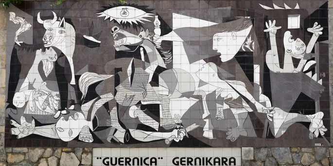

Bibliografia
Pablo Picasso (1881–1973): Pintor e escultor espanhol, é considerado um dos artistas mais influentes do século XX e um dos criadores do cubismo, ao lado de Georges Braque. Sua produção artística é vasta e diversa, marcada por fases distintas e inovações radicais.
Vida: Nascido em Málaga, Espanha, demonstrou talento precoce e estudou arte em várias cidades espanholas. Mudou-se para Paris em 1904, onde se envolveu com o cenário artístico vanguardista. Viveu grande parte da vida na França.
Obra: A carreira de Picasso é dividida em fases, como a Fase Azul (melancólica), a Fase Rosa, o Cubismo (com destaque para Les Demoiselles d’Avignon, 1907), o Classicismo e o Surrealismo. Sua obra mais famosa é Guernica (1937), uma poderosa denúncia contra os horrores da guerra.
Excentricidade e Legado: Picasso era conhecido por sua personalidade intensa, múltiplos relacionamentos e dedicação total à arte. Produziu mais de 50 mil obras ao longo da vida, entre pinturas, esculturas, cerâmicas e desenhos. Seu legado é imenso: revolucionou a arte moderna e inspirou gerações de artistas.
Obras Famosas
-
Guernica (1937)
Guernica foi pintada por Pablo Picasso em 1937 como uma reação ao bombardeio da cidade de Guernica durante a Guerra Civil Espanhola. A obra, em tons de preto, branco e cinza, simboliza o horror da guerra e o sofrimento das vítimas inocentes. Com figuras distorcidas e abstratas, é um poderoso protesto contra a violência e a injustiça, tornando-se um ícone do século XX.
-
Les Demoiselles d'Avignon (1907)
.jpg)
Les Demoiselles d'Avignon (1907) de Pablo Picasso é uma pintura revolucionária que marca o início do cubismo. Representa cinco mulheres nuas com formas distorcidas e geometrizadas, inspiradas pela arte africana e ibérica. O título faz referência ao bairro de Barcelona, conhecido pelos bordéis, e reflete a abordagem direta e sem idealizações das figuras femininas. Quando foi exibida, a obra causou choque, mas com o tempo se tornou fundamental para o desenvolvimento da arte moderna, influenciando profundamente o cubismo e outras correntes artísticas. Hoje, está no Museu de Arte Moderna (MoMA) em Nova York.
-
Vieux guitariste aveugle (1903)

Vieux guitariste aveugle (1904) de Pablo Picasso é uma pintura do seu Período Azul*, onde usou tons de azul para expressar solidão e sofrimento. A obra retrata um homem idoso e cego tocando guitarra, simbolizando a fragilidade humana e o isolamento. Criada em um momento difícil na vida de Picasso, que lidava com a morte de um amigo e dificuldades pessoais, a pintura reflete temas de pobreza e marginalização. Está atualmente no Art Institute of Chicago.
-
Natureza Morta (1901)
.png)
Natureza Morta (1901) de Picasso faz parte do seu *Período Azul*, caracterizado por cores frias e uma atmosfera de melancolia. A obra representa objetos como uma guitarra, garrafa e taça, e reflete a solidão e o sofrimento que Picasso sentia na época, após a morte de seu amigo Carles Casagemas. Apesar de ser uma natureza morta, a pintura transmite uma forte carga emocional, marcando uma fase de introspecção e transição na obra do artista.
-
Ciência e Caridade (1897)

Ciência e Caridade (1897) de Picasso é uma pintura realista criada quando ele tinha apenas 15 anos. A obra mostra uma mulher doente assistida por um médico, simbolizando a ciência, e por uma freira, representando a caridade. O quadro reflete a influência acadêmica e o talento precoce de Picasso antes de sua transição para estilos mais experimentais. Atualmente, está no Museu